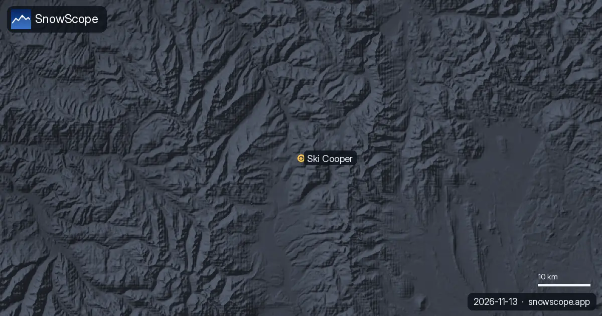

Ski Cooper près de Leadville : un tarif de semaine à 49 $ en décembre
Ski Cooper, perché au-dessus de 3 200 m près de Leadville, maintient son forfait adulte en semaine à 49 $ tout au long de décembre—le prix le plus bas de la région. La neige s'y accumule régulièrement au fur et à mesure que l'hiver progresse, atteignant des profondeurs skiables vers la mi-mois même lors d'hivers peu enneigés.
Consultez les prévisions neige en temps réel pour Ski Cooper sur l'application SnowScopeHauteurs de neige, alertes poudreuse et carte 3D, gratuitement.
Altitude élevée, neige précoce
Les 5 remontées de Cooper grimpent de 3 226 m de base à 3 579 m de sommet sur environ 32 km de terrain. Cette altitude a un avantage : la neige durable arrive la première semaine d'octobre à mi-montagne, presque un mois avant les domaines en altitude inférieure. Vers la mi-novembre, le sommet porte déjà une trace de neige.
La neige de début de saison est fine partout à Cooper, mais plus on monte, mieux elle tient. Le sommet reçoit un peu plus qu'à mi-montagne, et la base accuse du retard sur les deux. C'est important si vous choisissez les remontées à utiliser lors des jours à faible couverture.

Décembre s'accélère ici
La véritable force de Cooper se manifeste en décembre. Un 1er décembre typique, mi-montagne (3 402 m) a seulement 46 cm. Le 15, cela saute à 66 cm, et à Noël, cela atteint 79 cm. Le sommet gagne un peu plus à chaque étape.
Les probabilités sont fortes. Vers la mi-décembre, 70 % des hivers dans notre historique de 46 ans avaient 50 cm ou plus à mi-montagne. À Noël, 80 % l'avaient. Même lors d'un hiver peu enneigé—le type qui se produit une année sur dix—mi-montagne affiche en moyenne 74 cm vers la mi-décembre, suffisant pour skier en toute sécurité sur les pistes damées.

L'avantage du forfait 49 $ en semaine
Pour la saison 2026-27, Ski Cooper maintient ses tarifs au niveau de l'année précédente. Un forfait journalier adulte (22-68 ans) coûte 49 $ du lundi au vendredi hors vacances, et 99 $ les fins de semaine et jours fériés. Aucun autre domaine skiable du Colorado à cette altitude n'égale ce tarif en semaine.
La stratégie est simple : skiez Cooper un jour de semaine en décembre et votre forfait remontée devient le moins cher sur la Front Range. Le trafic des fins de semaine reste aussi plus léger, ce qui compte sur une petite station avec cinq remontées.
Comparaison : Loveland et Vail
Loveland, le principal rival local de Cooper, est aussi en altitude (3 592 m à mi-montagne) et accumule une neige décembriste similaire : généralement 74 cm vers la mi-décembre. Mais Loveland coûte plus cher. Jusqu'au 13 décembre, les forfaits en ligne sont à 60 $ et les prix au guichet à 119 $. Après cela, le prix au guichet saute à 159 $, avec des réductions anticipées limitées. Le forfait en semaine à 49 $ de Cooper bat la tarification de Loveland tout au long du mois.
Vail, le plus grand domaine de la région, est en altitude inférieure (2 989 m à mi-montagne) et reçoit moins de neige : généralement 62 cm vers la mi-décembre. Pour les skieurs de début de saison choisissant uniquement selon l'altitude, l'élévation de Cooper lui confère un avantage sur Vail en décembre.
Les hivers se sont légèrement amenuisés
Cooper affiche un décalage à long terme qui mérite d'être noté. Dans les 15 premiers hivers de notre historique (1980-81 à 1994-95), la profondeur typique à mi-montagne le 15 décembre était 66 cm, avec 80 % des hivers au-dessus de 50 cm. Lors des 15 hivers les plus récents (2011-12 à 2025-26), ces chiffres sont tombés à 60 cm et 53 %. L'hiver dernier n'a livré que 42 cm à cette date.
La tendance est réelle mais graduelle. Cooper reste skiable un jour de mi-décembre typique selon n'importe quel standard historique. Le décalage signifie simplement que la couverture neigeuse de début de saison est moins garantie qu'autrefois, donc planifiez votre voyage pour la mi-décembre ou plus tard si la profondeur de neige compte pour votre séjour.
Logistique et froid
Leadville est à 3 094 m—déjà assez haut pour causer des effets d'altitude. Si vous arrivez en avion du niveau de la mer, dormez une nuit en ville avant de skier dur. Tennessee Pass (US-24), l'accès principal depuis la Front Range, peut devenir verglacé et venteux en hiver ; emportez des chaînes et vérifiez les conditions avant de partir.
Le froid de début de saison est réel ici. Les matins de décembre peuvent descendre à -23 °C ou plus bas. Apportez des couches plus chaudes que prévu, et attention au refroidissement éolien au sommet. La récompense est de skier en altitude, tôt en saison, à un tarif qui rend le voyage abordable.
Conseils aux skieurs
- Réservez votre visite en semaine pour la mi-décembre ou plus tard pour maximiser la profondeur de neige tout en conservant le forfait à 49 $.
- Utilisez les remontées à mi-montagne et sommet ; évitez la base en début de saison quand des rochers peuvent percer la fine couverture.
- Dormez une nuit à Leadville avant de skier pour vous adapter à l'altitude de 10 500+ m ; la déshydratation et l'épuisement arrivent rapidement à cette altitude.
- Emportez des chaînes pour Tennessee Pass et vérifiez les rapports routiers avant de conduire depuis la Front Range en hiver.
- Préparez des couches de temps froid : le refroidissement éolien en début de saison à 11 700 m peut être grave même quand les températures semblent douces en altitude inférieure. Consultez le bulletin de l'avalanche du Colorado si vous prévoyez de skier hors-piste : https://avalanche.state.co.us/
À propos de ces chiffres
Les hauteurs de neige des stations sont la neige la plus épaisse sur le haut du domaine à la date indiquée ; ce sont des estimations pour une zone, pas une mesure en un point. Les prévisions peuvent changer. Consultez toujours le bulletin d'avalanche officiel avant le hors-piste.
Bulletins d'avalanche officiels: Colorado Avalanche Information Center
Citer ce bulletin
Pour la recherche, l'enseignement ou la presse : chiffres et graphiques réutilisables librement sous CC BY 4.0 avec cette citation.
SnowScope (2026), Ski Cooper près de Leadville : un tarif de semaine à 49 $ en décembre, https://snowscope.app/blog/fr/2026/11/ski-cooper-leadville-december-49-dollar-weekday.html, consulté le 2026-11-15
SnowScope (Atlas Labs). (2026, November 15). Ski Cooper près de Leadville : un tarif de semaine à 49 $ en décembre. SnowScope snow reports. https://snowscope.app/blog/fr/2026/11/ski-cooper-leadville-december-49-dollar-weekday.html
BibTeX
@misc{snowscope2026skicooperleadvilledecemb,
author = {{SnowScope (Atlas Labs)}},
title = {Ski Cooper près de Leadville : un tarif de semaine à 49 $ en décembre},
year = {2026},
month = nov,
howpublished = {\url{https://snowscope.app/blog/fr/2026/11/ski-cooper-leadville-december-49-dollar-weekday.html}},
note = {Published 2026-11-15 09:34 UTC; accessed 2026-11-15}
}· CC BY 4.0 · Méthodes, données et outils →
Ski Cooper : neige et température selon l'altitude, cet hiver vs l'hiver dernier (outils) →
Suivre Ski Cooper
Gratuit : un message quand la neige arrive, et la météo chaque matin.